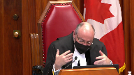
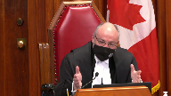
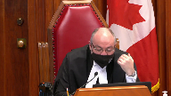
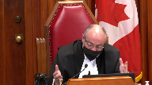
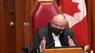
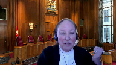
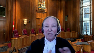

Her Majesty the Queen v. Alta Energy Luxembourg S.A.R.L
This transcript was made with automated artificial intelligence models and its accuracy has not been verified. Review the original webcast here.
Justice Wagner (00:00:02): The court, la courte.
Bonjour à tous, veuillez-vous asseoir.
The case of Her Majesty the Queen against Alta Energy Luxembourg, S.A.R.L. for the appellant, Her Majesty the Queen, Michael Taylor, Nathalie Goulard for the respondent, Alta Energy Luxembourg, Matthew G. Williams and E. Rebecca Potter.
Mr. Taylor.
Speaker 1 (00:01:02): Thank you, Justice and members of the court.
As the court is aware, this case is a GAR case, the general anti-avoidance rule of the income.
Justice Wagner (00:01:11): I’m sorry to interrupt, Mr. Taylor, I’m sorry, I forgot to mention that our colleagues, Justice Sabella and Justice Carraghatsanis, although you don’t see them, now you see them, are not in the courthouse, they are participating in that hearing.
I’m sorry, go ahead.
I do see them.
I’m sorry, I forgot to mention that our colleagues, Justice Sabella and Justice Carraghatsanis, although you don’t see them, are not in the courthouse, they are participating in that
Speaker 1 (00:01:26): I do see them, thank you.
As this court is aware, under the GAR, a case turns not on the meaning of the relevant provisions but on their object, spirit, and purpose, and whether a transaction complies with or frustrates or defeats that object, spirit, and purpose.
In this case, the Federal Court of Appeal made a fundamental error by holding that the object, spirit, and purpose of the relevant provisions of the Canada-Luxembourg Tax Treaty go no further than the meaning of their text on its face.
And this error led to it to fail to appreciate the true object, spirit, and purpose of the provisions or to conduct the proper analysis of how and why the respondent’s transaction abused those provisions.
And just at the outset of my submission, I’d like to make the point, with respect to the GAR and Canada’s tax treaties, there can really be no debate that the GAR applies to Canada’s tax treaties.
Parliament has made that abundantly clear.
The amendments made in 2004 to section 245 of the Income Tax Act are explicit that the GAR will apply where there is a misuse or abuse of the provisions of a tax treaty.
Clearly, Parliament contemplates that taxpayers may engage in transactions which abuse treaty provisions.
Overlapping speakers (00:02:48): Is that a dispute, Mr. Taylor?
Is that a disputed proposition that Geyer applies to treaties?
Speaker 1 (00:02:55): Justice, I’m not saying, I’m not sure that it’s overtly disputed, but I think it’s implicit in the arguments put forward by the respondent and in Justice Webb’s decision that because treaties are negotiated between the parties, the words must prevail.
And Justice Webb’s decision, I think, goes to the extent that there is no scope to apply the GAR if there’s no rationale recognized beyond the words of the treaty.
And Parliament has told us that there must be scope for the GAR to apply.
And in the Income Tax Conventions Interpretation Act amendments, section 4.1, Parliament has declared that the law of Canada is that the GAR applies.
And this is consistent with the position of the OECD and its member states as far back as 1977.
Overlapping speakers (00:03:47): What’s the position of Luxembourg?
What’s Luxembourg’s position on that?
Speaker 1 (00:03:52): Luxembourg accepts that domestic anti-avoidance rules can apply to a tax treaty.
Overlapping speakers (00:03:58): And Luxembourg.
Speaker 1 (00:03:59): in fact has its own domestic anti-avoidance rules as well.
All OECD member states do.
Justice Kasirer (00:04:06): But, uh, Mr. Taylor, in the, in the, the dreams of a legislative draftsperson, isn’t it possible that the object, spirit, and purpose coincide perfectly with the, with the text and its ordinary meaning?
I mean, and without, and that doesn’t, that doesn’t mean GAR doesn’t, doesn’t apply to tax, tax treaties.
But it is theoretically possible that they do coincide, is it not?
Speaker 1 (00:04:34): Justice, I’m not suggesting that it’s impossible, and in fact, this court has previously recognized that there could be cases where the object, spirit, and purpose is perfectly expressed in the text.
What I’m here to argue is that this is not one of them.
These treaty provisions are not one of those cases.
And when the provisions are properly read with regard to their text, context, and purpose, an underlying rationale is apparent, which was not appreciated by the Federal Court of Appeal, and is not acknowledged by the respondents in this case.
And the emphasis on the text conflates the rule with the rationale.
The rule says what it says.
The rationale is, as Justice Rothstein held in Copthorne, the why.
Why is the rule there?
What is it intended to achieve?
Why do we exempt a resident of Luxembourg from taxation on gains from shares of a Canadian company that conduct business in immovable property?
Why do tax treaties based on the OECD model convention adopt as the threshold to residency liability to comprehensive taxation?
To simply restate those rules as if those are the raison d’etre of the provisions conflates the meaning of the rules with their rationale.
And that is the error that the Court of Appeal made.
And that is the error that the respondent perpetuates before this Court.
Justice Côté (00:06:09): What is the rationale, what is the object, spirit and purpose not of the treaty but of the specific provisions relied upon here by the taxpayer?
Speaker 1 (00:06:20): Well, Justice, those are expressed in detail in our factum.
Overlapping speakers (00:06:23): I know, but I would like you to summarize for us.
Speaker 1 (00:06:26): And I will.

So there are, we say there are three relevant provisions, Article 1, Article 4, and Article 13.
The purpose of Article 1 is to define and delineate the scope of the treaty.
I think both parties are agreed as to that.
It says the treaty applies to residents of both contracting states.
The object, spirit, and purpose of that, in our view, is connected, you know, all three provisions operate together, all of the provisions operate together.
The object, spirit, and purpose is to allocate the right to tax as between the two contracting states based on an economic logic as to which of the two states has the greater economic justification to tax the particular taxpayer for the particular income.
Justice Brown (00:07:17): Can I just take a step back, and I’m sorry to interrupt you, but there’s just, I’m trying to get over one little point.

Are you advancing this object-spirit-purpose argument to supplement the treaty’s requirements regarding residency, or are you saying this is how you interpret residence as it applies in the treaty?
Speaker 1 (00:07:42): Justice, we are not, and again I think this goes back to the Federal Court of Appeals decision as well, the Crown is not saying there are unexpressed conditions in the treaty to be a resident.
Residency is defined in the treaty as being a resident under the law of one of the contracting states.
The argument that we are advancing is residency is adopted as the gateway to the treaty for a reason.
The reason being the long accepted premise that residents connotes or reflects a deep economic attachment to a state that gives that state a justifiable claim to levy tax.
What we are saying here is that we are not saying there are unexpressed conditions in the treaty to be a resident under the law of one of the contracting states.
The argument that we are advancing is residency is adopted as the gateway to the treaty for a reason.
The argument that we are advancing is that we are not saying there are unexpressed conditions in the treaty to be a resident under the law of one of the contracting states.
The argument that we are advancing is that we are not saying there are unexpressed conditions in the treaty to be a
Justice Brown (00:08:30): to my question is it does go to how you interpret residency.

It’s not some residency plus condition, it’s residency under the treaty connotes the substantial connection because that’s consistent with the objects and purposes and the spirit of the agreement.
Am I right?
Speaker 1 (00:08:51): Um yes but I want to I want to be clear we are not arguing that residency in the traditional sense of statutory interpretation means something other than what the treaty says it means which is what this court interpreted in Crown Forest.
We are saying the reason why this benefit is accorded to a resident under an article like Article 13 is to acknowledge that connection and in the GAR case we in every GAR case we start from the premise that yes the taxpayer complies with the provision they are a resident under Luxembourg law but they are not they do not have the connection to Luxembourg in an economic sense that justifies Canada’s commitment to seed taxing rights it’s not in accordance with the logic of the treaty.
Overlapping speakers (00:09:47): They are not a resident of Luxembourg for the purposes of the treaty.
Speaker 1 (00:09:51): That is not our position, though.
We are dealing solely with the benefit under Article 13.
We are saying, according to them, the benefit under Article 13 does not accord with the rationale of the treaty.
That’s not the same thing as saying they’re not a resident of Luxembourg for purposes of the treaty.
We aren’t saying that, and we don’t say that in a GAR case.
We don’t say the GAR, you know, that negatives a legal reality.
We say where the legal reality doesn’t accord with the rationale of the provision, then the provision, the benefit of the provision will be denied.
Overlapping speakers (00:10:28): and all this you say in the interest of certainty.
Speaker 1 (00:10:31): No, I wouldn’t say we say this in the interest of certainty.
Overlapping speakers (00:10:36): and I did not.
Speaker 1 (00:10:37): speak about certainty in this case.
The respondent says, certainty, predictability, and fairness, certainty, predictability, and fairness.
That is their mantra.
The reality is that
Justice Côté (00:10:48): So in taking that position, Mr. Taylor, are you not Canada saying oh Luxembourg, because 4-1 is quite clear, residence has to be determined under the laws of the other state, the contracting state.
So in taking that position, are you not saying us Canada, we are not really happy with you, Luxembourg, not being so demanding on the requirement to be a resident of your country?
Are you not trying to change the law of Luxembourg about the definition of residence?
Speaker 1 (00:11:19): No, we’re not trying to change that law at all.
We are saying that when we and Luxembourg entered into this convention, there was a shared understanding of the scheme of the convention and the reasons why the benefits were accorded.
And the presumption is a resident of Luxembourg has sufficient connection to justify ceding our right to tax as the state where the property is situated to the state of residence.
And we’re saying in this case, on this transaction, on these facts, that connection is not present and to accord this benefit defeats the purpose.
That’s not the same thing as saying they are not a resident or we don’t accept the law of Luxembourg.
Justice Rowe (00:12:05): If I’m following you accurately, you’re not disputing that as a matter of law, Alta Lux, as I’ll call it, is in fact a resident and that it’s a company registered in Luxembourg.
What really at issue is what’s the significance of that given that it has no real connection with Luxembourg.
Speaker 1 (00:12:31): I think that’s a fair statement, Justice Roe.
The issue is, did the parties intend that a company with no connection to either state like this company would benefit from a benefit accorded under the treaty to residents of the two states?
In other words, they’re not…
Justice Brown (00:12:50): they don’t have a sufficient connection to justify being recognized as residents under the treaty.
Because residents of the treaty have the benefits of the treaty.
Speaker 1 (00:13:00): Well, Justice, we have to go beyond the textual circle.
They comply with the law of Luxembourg.
They are a resident.
Just like in every GAR case, the taxpayer complies with the words of the provision.
It’s the spirit of the provision that governs.
We’re not saying they’re not a resident of Luxembourg or that they shouldn’t be recognized as a resident of Luxembourg.
We’re saying in this case, the rationale for the benefit provision is not satisfied by this transaction and in fact is defeated.
And that’s a different, conceptually different point from arguing as to whether or not they are truly a resident.
Justice Abella (00:13:43): Can I ask you then, can I go back to Justice Cote’s question to you and and look at Article 4, which sets out what resident of a contracting state means.
In what what language in 4.1 do we find the theory that you’re advancing for how to interpret resident for purposes of Articles 13, 4 and 5.
So I just because it’s it’s clear by virtue of domicile residents place of management or other criterion of a similar nature doesn’t include person who’s liable to tax in that state in respect only of income from sources in that state so.
So just following the questions that you’ve been asked aren’t you creating separate categories of residency for different purposes, and this one is designed to, in a way, undermine what appears to be very clear in Article 4.1.
Like you were adding an economic connection requirement that isn’t there.
Speaker 1 (00:14:57): Justice, we’re back to the fundamental difference between GAR analysis and traditional interpretation.
Article 4 clearly states who will be a resident for purposes of the treaty.
It says, if you are liable to tax by reason of one of these things.
In Crown Forest, Justice Iacobucci looked at that and said, the meaning of this is, if you are liable to the most comprehensive taxation that a state imposes, you qualify as a resident.
That is a meaning-based analysis.
The GAR says go beyond.
That’s what Justice Rothstein recognized in Coptorne, is the unusual duty that the GAR imposes.
It’s to ask why, and to simply repeat as the respondent does and as Justice Webb did, that they’re a resident because they’re liable to tax in Luxembourg, because they have comprehensive tax liability, is to simply repeat the rule as if the rule is the rationale.
There is a rationale for that rule.
There is a rationale for the use of residency.
Justice Abella (00:16:04): But, but Copthorne and Trusco also said it is not the role in applying GAR to impose policy considerations when you are interpreting the provisions and this it seems to me, as the Court of Appeal found and the, and the, and Justice Hogan, in the first instance, this seems to be adding a policy component to what, to the words, spirit, and obvious objective of the provisions themselves.
And that, that goes against what we’ve said you look at when you’re looking at the object, spirit and objective and rationale for the provisions.
It’s a new provision that you’re urging on us.
Speaker 1 (00:16:49): Well, Justice, I’d like to take your comments on, because I disagree with your interpretation of our argument.
In Trusco and Copthorne, this court said you can’t apply the GAR based on considerations of overarching policy.
You have to find an object, spirit, and purpose grounded in the provisions.
And our position here is the object, spirit, and purpose, the economic logic for allocating taxing rights is grounded in the provisions.
If Article 13 is read as part of the coherent scheme of the treaty, it is clear there is a logic to the treaty, to the allocation of taxing rights.
And the allocation of taxing rights, we know from the background work done for the League of Nations and the OECD’s background work and the academic commentary that we’ve cited to the court.
We know that logic has to do with resolving the contest between the two states, the resident state and the source state, based on which state has the greater economic justification to levy the tax.
The economic justification flows from the connection of the taxpayer to the state.
That’s recognized in all the working materials behind the double tax conventions.
And residence is used because residence connotes that close connection.
And that principle infuses Canadian tax law.
We’ve cited the Krishna text to you because Professor Krishna explains that very clearly.
When you are a resident of a state, you are based there.
You derive benefits from the state.
As an economic actor, you owe allegiance to the state.
You owe a contribution by way of tax.
Residence is infused with this premise of economic connection.
That is the rationale behind residence.
Justice Karakatsanis (00:18:45): I want to ask you, I want to make sure I understand your position properly.
Are you saying that before anyone, any entity that legally fits within the definition of residency, before any resident can rely on the treaty for any tax benefit, the resident has to have some sufficient economic connection?
Is that for all purposes or is it just for the particular provision, section 13, which already creates its own criteria to determine which regime applies, which has the greater economic justification?
So is this an overarching requirement that you’re saying, if I want to benefit as a resident, get a tax benefit on a treaty, I have to have some sufficient economic connection to justify which regime applies or do you see the difficulty I’m having with the way that you’ve articulated this objective in such an overarching way that it does seem to effectively rewrite this treaty to something that may or may not have been acceptable at the time?
Speaker 1 (00:20:06): Well, Justice, what you’re calling an overarching policy, I would call an embedded presumption that underlies the structure of the OECD model, which these two states have adopted, and most states have adopted.
Most states sign on to this concept.
Overlapping speakers (00:20:24): Right. But-
Speaker 1 (00:20:25): But what we are talking about here, and it’s important to remember this, we’re talking about a GAR case.
We’re talking about an avoidance transaction.
So in the vast majority of cases where transactions have bona fide commercial purposes or family planning purposes or estate planning purposes, we’re not concerned with whether they comply with the object’s spirit and purpose.
Overlapping speakers (00:20:48): Right.
Speaker 1 (00:20:48): It’s only when a taxpayer carries out a blatant avoidance transaction like this one that they’re exposed to the possible application of the GAR. Right.
Justice Karakatsanis (00:20:58): Tax avoidance by itself isn’t going to do it.
It has to be abusive.
So I still am not sure what the answer to my question is.
I think what you’re saying is that before any resident can rely on the treaty for a tax benefit, it needs to have a sufficient economic connection.
I think you’re saying that infuses the idea of residency for the purpose of the entire treaty.
Speaker 1 (00:21:23): Well, Justice, I wouldn’t go so far as to say before any resident can rely on the treaty ever because I would say when there is an avoidance transaction, then this is the issue for the purported resident or for the legal resident.
Overlapping speakers (00:21:42): But that’s, that’s, that’s because we’re in the guard case.
We’re not in the regular case.
Speaker 1 (00:21:46): If they moved to Luxembourg because they wanted to set up an investment in Canada, we would be talking about something different.
They moved to Luxembourg specifically to liquidate the Canadian investment free of Canadian tax.
Is that why Parliament and the Crown have entered into this treaty?
That’s the question.
Justice Karakatsanis (00:22:03): All right so
but again that then leads to the issue that tax avoidance is just one of the three criteria.
It’s not enough in itself but your answer almost suggests that it gets you to an abusive or misuse on its own.
Speaker 1 (00:22:20): I would say it creates the spectre, where you have an avoidance transaction like this, that is disconnected from the economics that underlie the bargain between the two states.
Then, you have a deal.
Justice Côté (00:22:34): Thank you very much.
Justice Abella (00:23:32): If I could just add on, I think that point, I think also requires looking at paragraph 85, the very next paragraph where Justice Hogan explains that Canada could have insisted that the exemption provided for under 13-5 be available only in circumstances where the capital gain was otherwise taxable in Luxembourg.
So in other words, Justice Cote’s point about the treaty being negotiated with the parties new at the time, I mean, isn’t that relevant to how we look at whether it’s abusive?
Speaker 1 (00:24:09): All right, Justices Cote and Nibala, Justices Hogan’s comments are correct insofar as they go.
The states that negotiate conventions are aware of each other’s tax systems.
The issue that we take with Justice Hogan’s comments is that they effectively miss the point of this case.
Canada does not allege an abuse because the taxpayer avoided Canadian tax and also didn’t pay tax in Luxembourg.
The double non-taxation is not the abuse that is alleged and Justice Webb commented on this as well and in fairness to with respect Justice Webb
I think also failed to appreciate the Crown’s position.
The Crown’s position isn’t that in order for a double taxation’s object, spirit and purpose, sorry a double taxation conventions object, spirit and purpose to be achieved, there must be tax in one or the other state.
That’s not our position.
Our position is the abusive element here is the fact that they had no capacity to earn any economic gain in Luxembourg.
They had no presence because in addition to having no business premise and no other business and no employees and no office, they had a financing structure.
Their profit participating loan so that every dollar booked by Alta Lux as revenue is matched by a corresponding automatic liability back to their shareholder.
But this, but this, but this, this sort of
Justice Brown (00:25:47): This sort of mischief could have been anticipated and could have been addressed.

I mean, the commentary from the OECD predating the treaty, so I’m talking about, I think, the 1998 commentary, gives you several options to include in tax treaties relating to anti-avoidance, which, in fact, Canada negotiated into tax treaties with other states.
So you can address these things by denying treaty benefits to a resident that’s beneficially owned or controlled by residents of other countries.
We’ve done that in a few treaties.
You could exclude application of companies entitled to special tax benefits under the corresponding state.
We’ve done that in a treaty.
We can have residency rules to prevent double taxation or if the person isn’t subject to income tax in the state of residence, then the person is deemed a non-residents.
We’ve done that with the Swiss treaty and you can have a substantial connection test much as you’re suggesting, which we did 37 years ago with our treaty with the United States.
And furthermore, just to make the point that these kinds of problems could have been anticipated, they clearly were because there are articles in this particular treaty, articles 10, 11, and 12, that include anti-avoidance provisions relating to dividends and interest and royalties if the conduit company is not the beneficial owner.
Why is that not dispositive of this question of whether you’re trying to rewrite a tax treaty?
Speaker 1 (00:27:29): Justice Brown, you’re correct.
Those provisions have been used and they have been contemplated in negotiations and many different treaties around the world.
The flaw in your question, I would submit to you is it reduces effectively to an argument that can be made in any and every GAR case, which is parliament could have spoken.
The legislature could have addressed this and didn’t.
Overlapping speakers (00:28:01): No, this isn’t parliament, this is the executive negotiating treaties.
Speaker 1 (00:28:05): I understand that.
I’m analogizing.
I’m submitting it’s effectively the same argument, which is you could have addressed this and you didn’t, so therefore, tough.
And that’s the wrong approach with respect to a GAR case.
The GAR case is to look at what was enacted or what was negotiated, apply the textual, contextual and purpose of interpretation and discern the object, spirit and purpose.
Justice Moldaver (00:28:31): How can we know in a case like this that Canada did this with his eyes wide open?
The restriction here, the properties in question aren’t any properties just for investment purposes.
They’re properties that involve business properties that are carrying on business.
So why can’t we look at this from the point of view that Canada knew well, very well, that Luxembourg is a place that many treat as tax havens.
They got very generous tax provisions.
They attract investors who then invest worldwide.
Canada’s looking at this and says, you know, if we require strong economic ties to Luxembourg, we’re gonna lose out on these investors.
We’re gonna take the chance, we’re gonna go along with this because the realities are we want these investors to invest in business properties in Canada. Why?
Because that will generate a whole lot of taxes for us.
It’ll employ thousands of people, thousands of jobs.
So we’re willing to go along with that.
In fact, that’s what we have in mind.
We don’t wanna lose out on a very lucrative market.
What’s wrong with that?
Speaker 1 (00:29:51): Well, Justice, I hear what you’re saying and that could be a rationale that treaty negotiators follow in negotiating a treaty, but I would—
Justice Moldaver (00:30:04): more
and then I’ll let you go.
Whose, whose onus is this?
I thought it’s Canada’s onus.
And so, so I mean, you could say that they didn’t think of this, that it played no part in the whole deal, and that they meant something else, but, but really, you’ve got the onus.
So it’s not good enough to say there might have been something else.
If there is a legitimate basis upon which Canada would enter this treaty with its eyes wide open, as I just set out to you, isn’t that fatal to your position?
Speaker 1 (00:30:43): Well, Justice, my response to your position, and this goes back to Justice Brown’s question because I haven’t fully answered him, is that there is a reason why the provisions work the way they do and they derive from the OECD model and the reason has to do with resolving the contest between the two states.
Who is the better situated to tax because of their economic claim?
And this rationale infuses the allocation of jurisdiction between the two states and that is a reason for adopting these provisions.
We will cede our right to tax this type of gain because the resident state has the better claim.
That’s the theory of the entire framework of the double taxation provisions of the convention.
Overlapping speakers (00:31:35): But it-
Speaker 1 (00:31:36): doesn’t mean that we are granting this benefit to Luxembourg to provide everyone else in the world with an avenue to liquidate their investments in Canada free of Canadian tax.
And a transaction like this one, this is not an inbound investment transaction.
The Canada Luxembourg Treaty is not being used to generate investment and jobs and growth in Canada.
It’s being used to liquidate a previous investment by residents of other states.
And that’s not the purpose of the convention.
And Justice Iacobucci recognized that in Crown Forest.
We don’t sign treaties with one state to give avenues to residents of stranger states to come and take those benefits.
And that’s precisely what happened here.
It would be different if this was a transaction with an economic purpose, an investment purpose, not a tax avoidance transaction.
This can’t possibly be the reason why these treaties are entered into.
Justice Kasirer (00:32:31): Maybe for me, Mr. Taylor, your argument would be plainer on object, spirit, and purpose.
If you fixed on the idea of economic allegiance, which you raised in the factum, and you say is, dates back to the 1920s, the idea that the scheme for allocating taxing rights between contracting states reflects this theory of economic allegiance that transcends the residence of the taxpayer, and also looks at the situs of the income as relevant to determining which state has a better claim to tax.
What is exactly economic allegiance in respect of your claim, and how does it differ from residency as it’s spoken to in the text of the act, or the treaty, pardon me?
Speaker 1 (00:33:22): Justice, I want to give your question the attention that it requires, but I’d like to ask your indulgence for just 20 or 30 seconds to finish my response to Justice Brown.
And there was a question before that that I think I…
Overlapping speakers (00:33:39): I will also pass.
Speaker 1 (00:33:39): Absolutely, I’m most sorry.
All right, which is that, and I think also Justice Moldover’s question, these concerns may well have been anticipated, could have been anticipated, have been anticipated in other treaties, have there been attempts to address them by all different states with all different kinds of provisions, but it has always been recognized since at least 1977 that it remains open to a contracting state to apply its domestic anti-abuse rule.
That is still an option on the table, despite all the rest of the.
Overlapping speakers (00:34:13): What do you rely on for that, that it’s been open since 1977?
Speaker 1 (00:34:21): It’s contemplated in the 1977 commentaries the states may elect to preserve
Overlapping speakers (00:34:27): So which commentary are you talking about the OECD commentary on double taxation?
Speaker 1 (00:34:32): I’m talking about the commentary to the 1977 model well there’s been several so well that was commentary that was published in 1977 with the 1977 version of the model because
Justice Brown (00:34:47): Because the commentary is made clear that it was insufficient to preclude, it was insufficient to preclude someone from getting that agreement unless there is a term to that effect.

Where no such provisions will exist, treaty benefits will have to be granted under the principle of pact to suit servanda even if considered improper.
Same thing in 1992.
Now, in 2003, the OECD, right, the revision reverses position and states that preventing tax avoidance is a purpose of tax treaties, but then who registers an observation to the contrary?
Luxembourg, right, stating its view that absent an express provision in the convention, a treaty can apply domestic anti-abuse provisions only by mutual agreement.
Speaker 1 (00:35:40): Yes, they do register that convention, but at the same, or that observation, at the same time, the law of Canada is the GAR applies.
And the GAR has applied since 1988.
And so, that is the law.
And to finish my answer, I think to Justice Karakasanas’ question, why do we go beyond?
Because the GAR mandates going beyond.
That’s Parliament’s direction to taxpayers, the tax authority in the courts.
We have to go beyond.
Justice Karakatsanis (00:36:12): I mean, that’s obvious, but my question really was is this a requirement to meet this economic model throughout for every term of the treaty?
Section 13 has created its own criteria for determining the economic connection.
Speaker 1 (00:36:31): That’s right.
And my answer was that that rationale underlies the entirety of the distributive framework of the convention and in the vast majority of cases it’s not an issue because we’re not dealing with blatant tax avoidance transactions.
It’s only when we have an avoidance transaction that we move beyond the meaning of the words of the provisions to their object spirit and purpose.
And now Justice Kazir I will speak to your question about economic allegiance and I’m going to ask you to go to the Crown’s Condensed Book for the first time to the excerpt from Professor Krishna which sets this out I think very well.
That’s at tab 14.
Professor Krishna writes in developed countries residence is the most popular form of legal status connecting a taxpayer to the country.
The theory underlying residence as a connecting factor is that a person should owe economic allegiance to the country with which he she or it is most closely connected in economic and social terms.
The obligation to pay tax based on residence derives from the principle that persons who benefit from their economic and social affiliation with a country have an obligation to contribute to its public finances.
And this principle as I said earlier is embedded in Canadian tax law.
This is why when we’re looking at the residence of an individual we look at where do they work, where do they live, where’s their banking, where’s their health insurance, where’s their family, where are their friends, where are their connections.
We look at the substantive connections and we do the same.
So I guess my point is residence the the legal term presumes a degree of connection, close connection, and that is why when you have state A that says you earned a bunch of income in my state from my property I’m going to tax you and state B says that taxpayer is my resident they benefit from being in my state I’m going to tax them.
That’s why the convention generally resolves in favor of the state of residence.
Residence is accepted to be the closer economic connection.
That’s the presumption and the presumption is if you’re resident in a state if you’re connected to that state if you benefit from that state’s legal and financial and economic and social infrastructure you owe your economically you owe your allegiance to that state that’s why you owe tax you’re contributing to the system you are benefiting from.
That is what economic allegiance means and economic allegiance was proposed by those four economists to resolve the debate between the two states the contest over who gets to tax and so they say well the more closer connected state should have the right to tax each flow of income and so in some cases that will be the resident state but then in some cases the connection to the source state the situs of the property is so important it outweighs the residential connection and that’s what we see in article 13.
Article 13 takes the basic position that capital gains are taxable in the state of residence.
Why is that?
You can find the answer in the commentaries by Professor Lee that we cited but in short the answer is residence is state of residence is where the taxpayer accumulates their capital to invest in whatever the investment is that gives rise to the gains and then it’s where they consume their capital so the state of residence has the greater claim but when we talk about immovable property when we talk about real estate and resources which are central to the prosperity a resource base of a state that connection is stronger and so the OECD model provides in relation to gains from immovable property whether it’s directly or indirectly through an intermediary the allegiance goes to the state of source and that was recognized as fundamental Canadian policy by the House of Common Standing Committee and we have an excerpt from that in our materials which basically says Canadian real estate and Canadian resources are so closely connected to Canada that is it is justifiable for us to tax them even when gains are earned by a non-resident.
That is the theory of economic allegiance that underlies the convention the distributive framework and that’s well accepted there’s no real debate in the literature that that is the rationale for the distribution of taxing rights.
Justice Brown (00:41:09): And that was basically codified in your tax treaty with the United States, but not with Luxembourg.
Speaker 1 (00:41:18): Oh, how do you mean codified in that treaty, but not this treaty?
Justice, could you could you perhaps explain that to me?
Justice Brown (00:41:24): Well, in the U.S.-Canadian tax treaty, you have a substantial connection test to qualify as a genuine resident, right?

That’s why we have largely those considerations that you’ve just recounted apply to whether as between Canada or the United States, one is subject to one tax regime or the other.
Could have included it in the Luxembourg Treaty.
Chances are they wouldn’t have agreed to it, given the position that they took on the 2003 commentary.
It’s not there.
I understand what you’re saying.
Speaker 1 (00:42:02): justice through the back door my response to that would be because it’s not codified overtly doesn’t mean the object spirit and purpose isn’t still there.
So we don’t need that.
Justice Brown (00:42:15): that provision in the Canada-U.S. tax treaty, it’s superfluous.
Overlapping speakers (00:42:20): I wouldn’t say it’s…
Justice Brown (00:42:21): by the vibe of the thing, the spirit of the moment.
Speaker 1 (00:42:24): Well, Justice, there are many reasons why a legislature or a treaty negotiator would choose to particularize things, even if to make it simple to administer.
But that doesn’t mean that the object, spirit, and purpose wasn’t there and can’t be relied on.
Justice Brown (00:42:40): that they would have in including a term is to ensure that it governs.
Speaker 1 (00:42:45): it could be simply to ensure effective administration.
I, Justice, I can’t speak to the reasons why that’s included in that treaty.
No, I’m not asking you to speak to the reasons I’m asking you to speak to the reasons I’m asking you to speak to the reasons I’m asking you to speak to the reasons I’m asking you to speak to the reasons I’m asking you to speak to the reasons I’m asking you to speak to the reasons I’m asking you to speak to the reasons I’m asking you to speak to the reasons I’m
Justice Brown (00:42:55): I’m asking you to speak to the significance of its inclusion and its omission from a later treaty that Canada negotiates with a different state.
Speaker 1 (00:43:06): Well, Justice, I don’t think those two things can be separated because the negotiation with Luxembourg is a completely different beast from the negotiation with the United States.
Overlapping speakers (00:43:17): I think the United States brings it.
Speaker 1 (00:43:18): own model to the table and says here’s our model let’s negotiate.
Canada and Luxembourg start with the OECD model which has a long accepted reason for why it works the way it does and that reason is there whether they codify a substantial connection test or not.
The reason is still there in the provisions.
Justice Abella (00:43:38): I think that’s the point that Justice Brown is trying to advance and that I’m interested in as well.
In the Respondent’s Factum, he talks about the OECD commentary, which was in place at the time this treaty was negotiated, and then in paragraph 69 lists all of the potential options that the commentary included in a menu of avoidance provisions or provisions that could deal with avoidance.
Beneficial ownership, a look through provision such as the one in the United States, the exclusion approach, subject to tax provision, the channel approach.
In other words, there was a menu available when this treaty was negotiated and it wasn’t used, and in fact a provision was added, the business property exemption, which wasn’t in the OECD commentary or suggested.
The parties just came to that on their own, and of course that’s the subject of this case.
So, the question is, what do we take in terms of intention from the fact that all of these menu items which the OECD commentary outlined were simply not adopted in the treaty between Canada and Luxembourg?
Do we read them in?
Speaker 1 (00:45:06): Justice, just before I answer the substance of your question, I do want to say the business property exemption in 13.4 is not in the OECD model, but Canada and Luxembourg haven’t created it from whole cloth.
It’s contemplated by the OECD.
It’s there in the commentary as an option for the states, and a reason is given.
The OECD refers to properties like businesses and mines, where it’s the operation of business in the property that creates value.
Justice Abella (00:45:40): objecting to it all I’m saying is where it wanted to include a provision that was unique to that treaty it did so and left out a number of others what
Speaker 1 (00:45:51): Well, my response to your question I think is going to be much the same as my response to Justice Brown, which is in a GAR case, we can’t take, basically what Justice Brown has asked me and what you’re asking me now is there’s a whole bunch of specific anti-avoidance rules that could have been enacted that weren’t.
So don’t we take from that that the intention is to allow tax avoidance and with respect that’s incompatible with the GAR analysis.
The GAR analysis isn’t to look at what might have been there and draw inferences about Parliament’s choice or Parliament’s intention or the treaty drafter’s intention.
The GAR analysis is to look at what is there and interpret what is there and see if there is a rationale that is discernible from the context and the purpose and the text and the interplay of those three.
And so that’s why I keep coming back to what is there, which is there is a rationale and a scheme to the distributive framework.
And what this transaction does is fundamentally incompatible with that.
And that is the basis to apply the GAR, has nothing to do with what they might have negotiated.
It has everything to do with what they did negotiate and what that tells us about the shared intention of the treaty partners.
Justice Kasirer (00:47:08): Does the economic allegiance argument apply in the same sort of way to the exception that we worry about in in uh 13 the excluded property exception in particular for oil and gas reserves.
Justice Hogan cited a position paper paragraphs 42 and following explaining the different treatment here from the ordinary way of doing things and maybe to my mind it sounds like it it
it’s very relevant to how you understand the object spirit and purpose of of of section 13 as a whole.
Speaker 1 (00:47:49): Justice, the position paper that Justice Hogan cited spoke to the question of whether a taxpayer is carrying on business in property that they are holding.
Overlapping speakers (00:48:01): Thanks for watching!
Speaker 1 (00:48:02): for future use but not currently exploiting.
And I would say that that position paper really doesn’t assist the court with the GAR analysis because it is accepted by both parties that there was business carried on here.
And it’s not an allegation that there’s been an abuse because there was no real business carried on.
That’s not the abuse at issue.
There was a business that’s been found and accepted.
And the position paper doesn’t speak beyond that point.
The real issue is was the you know applying the logic of the economic logic of the treaty where business is taken to create value which gives weight to the resident states claim to tax.
Does that justify the benefit in this case where there is no connection to the resident state and the transaction is a divestment rather than an investment?
And I don’t think the position paper provides any assistance with that analysis.
Justice Moldaver (00:49:05): Just on that point, if I could just ask you this, the transaction you said I think was a divestment on an investment.
And I’m just thinking out loud here, but if in fact Canada did have in mind they were really looking for foreign investors to invest in business properties, we’ll call it business properties.
I just throw out this example because I think that the company in question here, Alta Canada, went to some lengths to make it clear that they were selling, that the shares that were going to be transferred to Chevron Canada, if I understand it, and the property was to continue as an ongoing business.
If we flip the facts a little bit and the shares were sold here by the company knowing full well that any business that was being carried on on that property was about to be wound down but they just wanted to make a quick profit.
One might say that they are going against the spirit and purpose and et cetera, et cetera.
I just throw that out as a possible example where you might say, you know what, this goes against the spirit of all this.
In fact, it’s antithetical to what we had in mind, Canada, what Canada had in mind.
And so you’re not going to get a tax break.
The car is going to catch you.
Speaker 1 (00:50:31): I hear what you’re saying Justice, you’re postulating a different way that 13-4, that the carve-out in 13-4 could be abused.
And I think that could very well be an argument that could be made on appropriate facts.
That doesn’t mean that there’s no abuse in this case though.
The abuse in this case is third-party residents who’ve already made their investment in Canada.
They want to get out, they don’t want to pay Canadian tax, but they don’t really want to be connected to another state.
So they put one foot in and one foot out and they flow the proceeds through.
And one must ask…
Justice Côté (00:51:12): is not as simple as section 14, the rationale of section 13.4 is to exempt a Luxembourg resident from Canadian taxation if there is an investment in immovable property in Canada used in a business.
Is it not as simple as that, the rationale of 13.4?
Speaker 1 (00:51:34): No, Justice, it’s not as simple as that.
That’s restating the rule as the rationale and that is what I’m submitting to you is the error that was made in the lower courts.
The rule is the rule.
The rule says
do X. Well, do X isn’t an end in and of itself.
The reason for X is the rationale.
The reason why that exemption is granted is the rationale and we’re urging the court to look to the reason for that rationale, for that rule.
The reason is apparent in the provisions of the treaty and their logic internal to the treaty.
We don’t need to look at what could have been negotiated.
We don’t need to look at what wasn’t negotiated.
We need to look at what was negotiated and what the reasonable intentions and expectations of the parties were, but we do need to look beyond simply what the rule says to do.
Overlapping speakers (00:52:28): If we don’t.
Speaker 1 (00:52:29): that approach then we effectively read the GAR out of existence.
Justice Moldaver (00:52:33): We know what Luxembourg, what benefits Luxembourg gets from attracting a whole lot of foreign investors even if they’re just shell companies and you know they’re just a post office box or whatever.
I mean I have no idea and maybe this is a wrong question to ask
but presumably it works for Luxembourg to have a lot of capital flowing through Luxembourg.
I don’t know whether their cost for banking you know I don’t know what this generates having shell companies and so on that really have no connection.
I don’t know what other benefits Luxembourg receives but it could be that this is a case where Canada says hey the bang is worth the buck because we’re going to have business properties running lots of employment and so on and Luxembourg says we’re going to not tax capital gains by people who do not have this economic kind of involvement here that you’re talking about
but I don’t know what economic maybe Luxembourg makes a pile of dough out of these foreign investors that are using it.
I have no idea
but maybe you do.
Speaker 1 (00:53:49): I’m not privy to how this benefits Luxembourg other than the same inferences.
I would draw similar inferences to the inferences you’ve drawn, Justice.
But I would say, hypothetically, if we accepted the premise of your question, if hypothetically Canada said in negotiation we might lose out on some tax but this is worth it to us because we’ll attract a lot of investment to develop our resources.
Hypothetically, let’s say Canada said that.
That’s still not what happened in this case.
The investment’s already made and it’s made by U.S. entities and foreigners working through a Cayman Islands pooling partnership and none of them have access to this tax benefit under our tax treaty with the United States.
There’s no tax treaty with the Cayman Islands.
Canada has said we’ll give this benefit to residents of Luxembourg to attract investment.
You’re working with your theory to attract investment and develop our resources but we’re not giving it to the world at large.
This isn’t an invitation to everyone in the world to come and take advantage of this provision and that’s precisely what happened in this case.
And that’s what Justice Iacobucci said in Crown Forest is the undesirable outcome where treaty shopping becomes abusive, where residents of stranger states help themselves to the benefits under conventions negotiated with other states.
And that’s not, you know, that can’t be reasonably the purpose or the intention of Canada negotiating this treaty to benefit residents of other states.
That turns one treaty effectively into the lowest common denominator of treaty policy.
Everyone in the world now holding Canadian resource properties can avoid Canadian tax by moving it to Luxembourg like this.
It defies logic that that would be the intention of the drafters.
Justice Abella (00:55:46): Couldn’t be.

Can I ask you, we’re dealing with the bilateral treaty.
And I think you were asked earlier on about what Luxembourg’s position would be.
Is the respondent right that, is there any dispute that they got confirmation from the Luxembourg tax authorities that the restructuring was in compliance with their tax legislation and administrative policies?
Speaker 1 (00:56:10): No, there’s no dispute as to that.

My understanding of the confirmation they received was to the effect that there would be either no taxable income in Luxembourg because all the money paid back to their shareholder as interest under that loan would be deductible or if there was a gain in Luxembourg it would be exempt.
So the confirmation is yeah you will be a resident and you won’t have any tax liability here.
And I would submit to the court that that just shows the artificial nature of this avoidance transaction.
They were not going to move to Luxembourg if they had exposure to Luxembourg domestic tax.
Luxembourg’s domestic tax rates are similar to Canada’s.
This transaction is not an economic investment transaction.
It’s a tax avoidance transaction and it’s only done under the assurance that they’re not swapping out one state’s tax for another.
Justice Abella (00:57:04): But this gets back to the point, Mr. Taylor.
There is a treaty in existence, it has provisions, both parties accept it.
One entity now is taking advantage of that bilateral treaty.
One of the countries in which it is resident is saying that it is in conformity with its requirements.
There’s no doubt that it’s avoidance, but the issue here is, is it abusive for a company to take advantage of a treaty that has been negotiated between two nations?
Or do we say it’s a bad policy to have tax avoidance treaties and therefore we should look at GAR in a way that makes sure that it is strictly construed to avoid the possibility of avoidance being applied?
Because it’s inherently abusive.
Speaker 1 (00:58:01): Well, Justice, I just want to be clear before I speak to your question that the Luxembourg tax ruling, as I read the document, it doesn’t speak to the company’s entitlement to claim a Canadian tax benefit or Luxembourg’s position on the application of the convention and any Canadian anti-abuse rules.
It’s just the domestic application of Luxembourg law.
You’re not taxable here.
So, I just would urge you not to go so far as to infer an intention on Luxembourg’s part that this company get that benefit.
Justice Abella (00:58:40): No, I’m just wondering if we can infer that the intention of both parties was that the treaty terms be applied and that this arguably, as the respondent says and the two decisions below say, this was an application of treaty provisions, freely negotiated, openly negotiated based on what the parties intended, which was exactly what happened.
Whether we like it as a matter of policy isn’t before us.
That’s not how we do GAR.
We have to look at the specific provisions and whether their purpose was frustrated.
And if the purpose was to avoid double taxation, can we say it was frustrated in this case?
Speaker 1 (00:59:25): Well, Justice, I think that just takes us back to the fundamental question of…
Overlapping speakers (00:59:30): How does it?
Speaker 1 (00:59:30): the GAR apply to a tax treaty when the provisions of the treaty are clear and plain.
And I would analogize that to applying the GAR to any provision of the Income Tax Act, which is clear and plain.
The fact that the rule plainly says what is required does not mean there is no deeper rationale behind the rule.
And the GAR says you need to look to that.
You need to look beyond the words.
You need to see whether there’s a rationale.
And we’re arguing to you that there is a rationale and that the rationale was shared not just by Canada and Luxembourg, but by all members of the OECD who adopt the model convention.
And this transaction is clearly patently contrary to that rationale.
And therefore, the GAR should be applied to deny the benefit.
Justice Abella (01:00:19): Just one more thing.
I just would like your views.
In paragraph 97 of Justice Hogan’s decision, he sets out the provisions of the finance announcement of the domestic approach on to try to avoid treaty shopping.
And the last paragraph says the rule would apply on forum shopping to taxation years that commence after the enactment of the rule into Canadian law.
And is it accepted then that this treaty was before any such treaty shopping prohibition?
Speaker 1 (01:00:56): Well, Justice, again, just to clarify, the finance announcement was a proposal which never made its way.
Overlapping speakers (01:01:05): into.
Okay, so it doesn’t even exist.
Speaker 1 (01:01:09): thing.
It was supplanted by the multilateral convention that was signed through the OECD.
Overlapping speakers (01:01:14): and is it retroactive the multilateral convention
yes it’s not so it doesn’t apply to these to this transaction
Speaker 1 (01:01:22): No, but if I may just have a few extra seconds, I think it’s important to speak to that because that treaty has been raised.

That treaty imposes effectively a treaty GAR in all of Canada’s tax treaties, where you have a test where the principal purpose of a transaction is to obtain a benefit.
The benefit will be denied where the benefit does not accord with the object, spirit and purpose.
It’s remarkably similar to the GAR.
And the only point I want to make about it is the GAR has been there all along as the fallback position and a decision by, and again, I’ll analogize to the domestic GAR, a decision by parliament to enact a new rule does not mean the object, spirit and purpose wasn’t always there in the provisions before the new rule.
Justice Wagner (01:02:13): Thank you very much.
Thank you, sir.
The court will take its morning break.
15 minutes.
Justice Kasirer (01:02:55): The court, la cool.
Justice Wagner (01:03:16): Mr. Williams.
Speaker 2 (01:03:21): Thank you, Mr. Chief Justice.
Good morning.
In applying the GAR, this Court has been consistently mindful to do so in a manner that balances the need to address abusive tax avoidance with the overall objective of Parliament that tax law be certain, predictable and fair.
And this balance has been achieved through the two-step abuse analysis that’s been mandated by this Court.
And the first step is to be undertaken, without regard to the circumstances of any particular case, to seek an objective determination of the object, spirit and purpose of the relevant provisions.
As this Court first explained in Canada Trusco, to search for an overriding policy that is not anchored in a textual, contextual and purposive interpretation of the specific provisions that are relied upon for the tax benefit would run counter to the overall policy of Parliament that tax law be certain, predictable and fair, so that taxpayers can intelligently order their affairs.
The object of the exercise is to determine the underlying rationale of the relevant provisions.
In the case of a bilaterally negotiated treaty, thereby ascertaining the true intention of the treaty partners.
Now, tax treaties are replete with choices.
And one choice that was made by Canada and Luxembourg was to deviate from the OECD model and include in Article 13 a specific carve-out provision, pursuant to which Canada was willing to forego the tax that might arise on the disposition of shares of a company in which business was being carried on in Canada, if it was held by a treaty resident of Luxembourg, if that company carried on a business in Canada.
Now, in this case, nearly $300 million was risked in that Canadian business.
And that business having been sold, Canada is now being asked to comply with its side of that bargain.
Now, the gain in question, it’s important to understand, accrued entirely while those shares were held by the respondent in Luxembourg.
In this appeal, we submit that the appellant is not asking this court to interpret relevant provisions of the treaty, but is instead asking this court to effectively change those provisions.
Instead of applying the treaty to a resident of a contracting state, as agreed by the parties, as set out in Article 1, which my friend said there was no dispute about the scope of Article 1, the appellant is now asking the court to apply the treaty only to those residents that have sufficient substantive economic connections to one of the contracting states, whatever that may mean.
This is not an analysis that’s grounded in the treaty.
This is not a result that’s consistent with the intention of the drafters.
This is a result devised to satisfy an overarching policy that has been advanced by the appellant, and that is not the role of the GAR.
And the onus rests on the appellant in this case to demonstrate the object, spirit, and purpose of the relevant provisions.
And those provisions which were discussed are Articles 1, 4, and 13 of the Canada-Luxembourg Tax Treaty.
Articles 1 and 4 are based on the OECD model.
They’re plain and they’re direct.
Article 1 sets out the scope of the convention, the persons covered, and it states that the convention shall apply to persons, which includes corporations, who are resident of one or both contracting states.
It says nothing more.
And then the term resident of a contracting state is specifically defined for the purposes of the treaty, including Article 13 by Article 4.
As clearly stated in that provision, for the purposes of this convention, the term resident of a contracting state means any person who under the laws of that state is liable to tax therein by reason of that person’s domicile, residence, place of management, or any other criteria of a similar nature.
And this court in Crown Forrest explained that the most similar element among the enumerated criteria is that each standing alone constitutes a basis on which states generally impose full tax liability.
That is the why.
The respondent is fully liable to Luxembourg tax.
There’s no dispute on that point.
And the appellant has admitted that the respondent is a resident of Luxembourg for the purposes of the treaty.
The respondent is not a stranger to the Canada-Luxembourg Tax Treaty.
The respondent falls squarely within the scope of that treaty, as agreed by the treaty partners.
So treaty residents having been established, the business property exception in Article 3.4 imposes one additional but important condition, that a business be carried on in the property in Canada.
And there’s no dispute that that condition was also satisfied.
The appellant has sought to demonstrate that the object, spirit, or purpose of the treaty, or the provisions of the treaty, differs from what was agreed upon by the treaty partners.
First, the appellant asserts that the benefits of bilateral tax conventions are intended to be available only to persons who have sufficient economic connections to one of the contracting states to qualify as a resident.
As explained by the appellant, those persons who owe an economic allegiance to that state.
And second, the appellant says that the commentary to the OECD model, particularly 2003 and subsequent, suggests that a purpose of tax treaties should be broadly interpreted so as to prevent tax avoidance.
Neither assertion provides evidence that the drafters of this treaty intended to fundamentally depart from their agreement, as is clearly evidenced in the text of their treaty.
If we turn first to the unstated condition, and I know my friends say this is not an unstated condition, but however one wants to interpret this notion of economic allegiance or substantive economic connection, the reality is that the treaty provides a test for residents, which is in turn how we determine scope.
It’s been admitted that the appellant has satisfied that test, but is now being denied the benefit.
There must be another hurdle upon which the respondent falls if that’s to be the case.
The appellant submits that the benefits of all bilateral tax conventions based on the OECD model are intended to be available only to persons who have sufficient substantive economic connections to one of the contracting states to qualify as a resident.
I quote that from paragraph 100 of the appellant’s factum.
Now the impact of such a fundamental change cannot be overstated.
The test for application clearly evidenced in articles one and four of the model treaty would no longer suffice.
And whatever steps may have been taken by various contracting states to limit particular benefits in particular situations would be usurped by a new threshold, a requirement that in all cases and in all circumstances, benefits would be limited only to those persons who have sufficient substantive economic connections to one of the contracting states.
Justice Côté (01:11:01): Mr. Williams, I’m sorry to interrupt you.
Would your argument be the same?
I just want to confirm that.
If there would have been no concession by the Crown about the residence.
Speaker 2 (01:11:15): Well, Madam Justice, in that instance we would have had to put to the test whether or not we were a resident and I believe we would have had to bring expert evidence, a question of domestic law of Luxembourg being a matter of fact for the Canadian courts, to demonstrate that we did in fact satisfy the test underlying.
What we would have had to satisfy, of course, is that the respondent was fully liable to tax in Luxembourg, that being the test that’s agreed upon.
The why behind the test, behind whether you were taxed by reason of residence, domicile, place of management, or some similar criteria.
We would have had to demonstrate to satisfy that, that we were fully subject to tax.
An expert opinion of course was provided to that effect on the assumption that we may have to do so, but ultimately it was conceded and therefore we no longer need to go down that path.
Justice Côté (01:12:07): concession so you file expert evidence on that point before the tax court and it was considered by the Crown at what time?
Before the tax court hearing.
Before the hearing, okay thanks.
Speaker 2 (01:12:20): Yes.
Justice Karakatsanis (01:12:20): Can I, before you get back to your place, perhaps ask you to address another point. Yes.
Yes.
Mr. Taylor makes the point that this is a bilateral treaty and that it was not intended for the benefit of third party states, and that this would then undermine the integrity of the reciprocal bargain and undermine the network of treaties.
So even if you think of that as an objective, that this creates a misuse of that objective.
It frustrates that objective.
Speaker 2 (01:12:57): Well, the concern that this may impede the ability to negotiate treaties because you would have a treaty of the lowest common denominator, that hasn’t borne out.
Canada has a robust network of over 90 tax treaties.
This provision has been on the books since the first treaty with Luxembourg in 1989.
It was repeated in the Luxembourg Treaty in 1999, which is the treaty at issue.
And in the 20 years since, this is now the first case that’s come before a court where we have been seeking to discuss the business carve-out.
So it certainly hasn’t led to an apparent rush of other residents.
Justice Karakatsanis (01:13:32): but doing the GAR analysis, if this is the objective, if it’s a bilateral treaty for the benefit, so how does that analysis work in your submission?
Speaker 2 (01:13:46): In my submission, it comes down to what was on the table before the negotiators, at the time they were negotiating the treaty.
And on the table in front of them would have been presumably all the OECD material relevant to the interpretation of treaties at that time.
And among that material would have been the identification of possible concerns that treaties may be used by a corporation, maybe incorporated in a treaty jurisdiction to be used by shareholders of other jurisdictions.
I don’t think that would be an outlandish proposition to assume that shareholders of a company may be from a country other than the company itself.
But that was readily identified.
And if that was a concern, if the consequence of that was a concern to the treaty partners that were negotiating the treaty, a menu of options was provided that could readily deal with that concern.
And Canada and Luxembourg chose not to put any of those in their treaty.
Justice Abella (01:14:49): But they did say in the preamble, Mr. Williams, that the contracting states are desiring to conclude a convention for the avoidance of double taxation and the prevention of fiscal evasion with respect to taxes on income and on capital.
What do we take?
Speaker 2 (01:15:06): What do we take from that?
We take two things from that.
First, it’s fiscal evasion.
We’re not evading taxes in this case.
There is no fiscal evasion.
Overlapping speakers (01:15:17): you’re avoiding it so there’s a difference between okay there’s a difference between evasion and avoiding.
Speaker 2 (01:15:22): Well, there is because you see in subsequent commentary, particularly in 2017, when that title is amended, they specifically include an tax avoidance as a purpose of the treaty.
In subsequent commentary, commentary enacted years and years after this.
Overlapping speakers (01:15:36): Actually, there’s a big difference between tax avoidance and tax evasion, as tax evasion gets you federal time.
Speaker 2 (01:15:43): I would like to think there’s quite a difference and I don’t think anybody here has ever suggested that there is evasion and to the extent frankly evasion isn’t even dealt with very much in the treaty itself.
I appreciate that one must look and take some interest in the title and the preamble but it’s the provisions that actually govern the day and there are provisions in the treaty that speak to exchange of information and assistance between states that would presumably assist in dealing with circumstances of evasion.
But there is nothing in this treaty that would suggest that in this instance the benefit applied by the business carve-out provision should be denied.
Justice Abella (01:16:21): Can we interpret the word, since what the main argument that we heard this morning from Mr. Taylor was intention.
Can we interpret those provisions, the object spirit of the provisions, can we interpret those in connection with whether or not this was an evasive transaction and therefore an abusive one?
Speaker 2 (01:16:46): Well, it wasn’t an evasive tax action.
There was no tax evasion in this case.
All tax was reported.
There was a gain in Luxembourg.
That gain was reported to the Luxembourg tax authorities.
It was fully taxed by the Luxembourg authorities as understood and under their domestic laws.
And we move forward.
Tax evasion would be something quite different.
Justice Abella (01:17:06): Okay, so you say that in the preamble they had a specific interpretation of evasion in mind dealing with how we interpret tax evasion as opposed to what we’re dealing with.
Speaker 2 (01:17:19): I believe they did, yes.
And my friend also said at one point that the fact that something is not in the treaty doesn’t mean that it doesn’t still exist under the purpose.
But what’s interesting in this case is it’s not that something simply was not in the treaty.
There was a decision made by these parties, not to put specific provisions in this tree.
And that decision has to be respected as well.
We had the menu of options.
Justice Brown (01:17:48): What legal significance can we attach or should we attach?
Because, of course, your friends invoked the 2003 commentary.
Overlapping speakers (01:17:57): Yes.
Justice Brown (01:17:57): What significance should we attach to Luxembourg’s registered observation on that commentary?
Speaker 2 (01:18:07): Well, I think it’s significant that Luxembourg did not go along with that commentary.
But I think what’s more telling is that that commentary in 2003 has been described as a fundamental change in the relationship between tax treaties and tax avoidance.
In fact, my friend and their appellant specifically referenced the 2003 changes as a substantial revision.
And I think it’s completely fair to interpret the commentary that would have been in front of the negotiators at the time that they undertook a treaty as part of the legal context of that negotiation.
But it would be unfair to use substantial revisions made after that treaty was negotiated, which clearly could not have been before the parties, as a justification to retroactively amend the terms that were agreed upon by those parties.
Justice Karakatsanis (01:19:06): Can I ask you, Mr. Williams, if we accept that an objective is to reduce double taxation in order to stimulate trade and investment.
Mr. Taylor also made the submission that the property had been purchased before so that the investment somehow predates.
And you mentioned that the shares, the value in the shares, was after residency.
What do you, what can we do with the fact that the property was purchased beforehand?
I mean, I’m getting, obviously, GAR only applies when you do meet all of the legal terms.
So we’ll clearly have to look at the rationale.
But what about that argument that it doesn’t meet even that rationale about encouraging investment in Canada?
Speaker 2 (01:19:57): Well, for one, there is an encouragement anytime taxes are reduced, I would suggest that investment is made, is encouraged.
And in this case, there was an investment in Canada for certain.
We know that.
What we also know from the facts is that much of the property was made, was purchased prior to the move to Luxembourg.
But the shares were then sold to the Luxembourg Company on a fully taxable transaction by the Delaware Company to the Luxembourg Company, so that any value that had been created on that property would have been taxed at that time.
So what we understand is that, yes, property was owned, but then the business, what drove the value, the wells that were dug, the gathering systems that were planned, all the work that was done on the ground in Alberta that drove the value of that property, that resulted in the gain, the very gain in question, was undertaken while those shares were held by the resident company in Luxembourg.
This isn’t a case where there was a property that was worth $600 million, $300 million had been invested, it was sold to Luxembourg, and then Luxembourg sold it the very next day and took the gain.
In that case, you’d still have to find an object, spirit, and purpose, because this isn’t a results-based test.
We’d have to find the object, spirit, and purpose that was frustrated, but that was not the situation in this case in any event.
Justice Martin (01:21:35): But in paragraph 88 of your factum you talk about the capital gain that you’re referring to being subject to comprehensive taxation in Luxembourg.
Now from the agreed statement of facts it seems to me and please correct me if I’m wrong that really what was paid was about 4,700 euros in the years of 2012 and 2013.
Is that what you mean by comprehensive taxation?
Speaker 2 (01:22:04): What we mean by comprehensive taxation is that the gain on this sale was taxed by Luxembourg as it would have been taxed for any resident of Luxembourg.
Any resident of Luxembourg that would have derived this gain would have been taxed in this manner.
This is how Luxembourg taxes.
Canada taxes 50% of a capital gain.
That’s not a hundred percent, but it’s, it’s as comprehensive as Canada taxes.
That’s full taxation in Canada.
And this was subject to full taxation in Luxembourg.
Justice Martin (01:22:42): A more general question, and it relates to, I understand fully your argument about that this adds a different condition and layer, I guess, on to the notion of residency as it exists in the treaty.
I understand that.
But I guess what my question is, isn’t that what gar does?
I mean, isn’t gar a separate legal requirement and that sometimes separate legal requirements either modify, add to, vary, but in any situation people comply with layers of regulation?
And so I was wondering what you would say about that.
Speaker 2 (01:23:27): I’m just what I would say on that is that yes of course when the GAR applies there has been textual compliance with the act or with the treaty but we still must agenify an object spirit and purpose of a provision that’s been abused there must be a toe hold a foothold of sorts in this treaty that allows you to get to where the respondent wants to go the appellant rather wants to go in this matter now there is no evidence that the parties here meant anything other than article one for the scope of the treaty than what was said or meant to define residents of a contracting state in any manner differently than they did in article four in fact when we look at that for economists the league of nations consultants back in 1923 one of their main points was that in making a convention such as this it’s important to define the terms so there will be no possibility of misinterpretation
well the OECD took that to heart they defined arguably the most important term in this treaty the resident of a contracting state and in the commentary in doing so in article the commentary to article four that was in place at the time we see this statement it’s a tab 16 of our condensed book it’s reproduced to paragraph 57 in our factum and it says conventions for the avoidance of double taxation do not normally concern themselves with the domestic laws of the contracting states laying down the conditions under which a person is to be treated fiscally as resident and consequently is fully liable to tax in that state they do not lay down standards which the provisions of the domestic laws of residents have to fulfill in order the claims for full tax liability can be accepted between the states in this respect states take their stand entirely on their own domestic laws now the drafters in this treaty specified the requisite nexus to the state agreed upon that being a liability to full tax as determined by that state and this case isn’t about whether or not Luxembourg has a legitimate claim to tax the respondent whether by virtue of its place of management that is sufficient for it to impose its full tax the treaty is clear Canada decides for Canada Luxembourg decides for Luxembourg and each has agreed to respect the other’s decision in fact Canada imposes full taxation on any corporation if it is simply incorporated in Canada under section 250 sub 4 sub a of the income tax act
so this notion is not particularly unique of not having whatever requisite connection my friend says must be present the requisite connection is being subject to the full tax regime of that state and the clarity that that provides affords taxpayers a measure of certainty predictability and fairness and it affords the drafters the ability to step forward from there and build out the distributive provisions and negotiate who gets what where when will provisions be limited how will we deal with all the distributed provisions we can do this now that we have a stable foundation it seems counterintuitive that the OECD took to heart the advice of the four economies and defined the most important term of this treaty and did so by pointing specifically to the domestic laws of the contracting state but left out from that an important hurdle that still must be cleared
Justice Karakatsanis (01:27:12): Can you just help me with one thing?
If we were to accept Mr. Taylor’s argument and that GAR required that there be a sufficient economic connection in order to justify, you know, not being a resident under the treaty and they were liable for tax in Canada, what would that do to the liability for tax in Luxembourg?
Because it doesn’t change the actual definition of residence and that’s in fact, they meet that definition has been conceded by Canada.
So technically if Luxembourg, I mean their tax regime applies and I realized that it’s very low or non-existent in terms of capital gains, but what does it actually do under the treaty?
Does it make the entity subject to the tax regime of both?
If it meets Luxembourg’s definition of residency, but also under GAR doesn’t meet the GAR requirement for a residency that has a sufficient economic connection.
Can you explain to me how it would work?
Speaker 2 (01:28:27): Well, that’s going to be part of the problem and my friend even said this case isn’t about the fact that there’s double non-taxation.
That’s not why they’re applying the GAR.
So you could very well have a circumstance where you have tax in one state, tax in the other, but you don’t have the sufficient economic connection.
So you’d have double tax.
Overlapping speakers (01:28:44): backstage.
Speaker 2 (01:28:45): You would because in this case, the Luxembourg government’s been very clear and the appellant has certainly not conceded or has admitted the point.
From Luxembourg’s perspective, this is a resident for the purposes of the treaty.
And it’s a resident fully subject to tax in Luxembourg more importantly.
So Luxembourg is certainly taxing the respondent and now Canada is taxing the respondent.
And now we have a problem because this is one discrete transaction, but every day there are thousands of cross-border transactions that involve thousands of different taxpayers and different types of income, all of which now are gonna have to be scrutinized to determine whether those participants have the sufficient economic connection in order to actually have the treaty apply in their circumstances.
This is a far cry from the certainty that was sought in defining resident of a contracting state.
Now, if you want to further limit the benefits, if once you have one and four in place
and you’d like to further limit, you’re free to do so.
You can build in conditions such as the condition that’s in article 13 here, or a beneficial owner supervision that you have in 10, 11 and 12, or other provisions in other treaties that have included purpose tests.
But those all build off a foundation and that foundation is set by articles one and four.
And I understand my friend doesn’t want to try and attack that foundation because that’s problematic, but make no mistake, the consequence of what’s happening here is to undermine the certainty and predictability that’s been deliberately afforded by those provisions.
Justice Martin (01:30:23): But doesn’t guard do precisely that?
Isn’t that what parliament has done is to say that normally there’s certainty and predictability but in certain situations where there is abusive avoidance, excuse me, that the certainty and predictability of the black letter interpretation of even treaties can give way in those circumstances?
So doesn’t that have to be built into the tax planning that people know that guard exists and that it can’t all just be certainty and predictability without, again, the overlay of guard?
Speaker 2 (01:31:05): Well, without question, the GAR is going to impact the certainty and predictability.
But this court was clear that there is a test that must be undertaken in order to apply the GAR.
And that test must be grounded in something.
In the object, spirit, and purpose of the provisions at issue.
This allows the taxpayer the opportunity to at least look from those provisions and see if whether there may be some reason for concern.
And Parliament did not intend for predictability, certainty, and fairness to disappear with the application of the GAR.
It tried to reconcile the need to have those elements in tax law with the GAR.
Hence the need to drive the analysis into a determination of object, spirit, and purpose of provisions.
And not an abstract notion of this is what should happen.
This is the proper result if you stand back and look at it.
You need to look at the provisions textually, contextually, and purposively with evidence.
Justice Martin (01:32:05): Right.
But your friend would say that that’s the textual compliance is at one level of the analysis.
But the spirit and object of the overall treaty is the other.
And in that, what they’re saying is that this was not a treaty that was put in place to change an existing transaction and intersperse a Luxembourg company that debits out all of its
so it doesn’t really conduct business in Luxembourg and to then move capital gains from Canada through that to disperse it to third parties.
And so, I mean, that’s what gar is supposed to do. No.
Speaker 2 (01:32:55): No, no, no, Madam Justice, that’s an interesting theory, but there’s no basis for that theory in the provisions of the treaty or in the commentary that supports those provisions.
To the contrary, the commentary that supports the provisions suggests that we, the states have agreed that they’re going to accept the determination of tax liability as determined by the other contracting state.
That’s going to be the basis upon which they do so.
And there’s no evidence in the treaty to suggest that Canada and Luxembourg came to an agreement that this treaty would not apply in circumstances as broadly described as they have been by my friend.
Justice Kasirer (01:33:36): That’s a theory, but there’s no evidence of that.
Mr. Williams, excuse me, because I’m just going to pick up on Justice Martin’s point, which strikes me as a wise one if one’s concerned about the guard test surviving this case.
As you say, the point of departure is the act has been, or in this case the treaty has been complied with, and there are circumstances where the text and the object, spirit, and purpose coincide, but what’s difficult to understand is to say, well, because the act says this, that’s got to be the object, spirit, and purpose.
That doesn’t sound like a GAR analysis, and when you look at paragraphs 69 and 70 of the Federal Court of Appeals judgment, one might be convinced that that was in the minds of the court.
In my view, the rationale for the relevant provisions of the Luxembourg Convention can be found in the text of these provisions.
70, as a result, these provisions speak for themselves.
I would have thought that GAR doesn’t want the provisions to speak for themselves.
Speaker 2 (01:35:00): Well, Justice, this court, in Copthorne, at paragraph 110, recognized the possibility that the rationale of a provision may be no broader than the text itself.
Justice Kasirer (01:35:11): As I say, a coincidence can happen, but here we have a serious argument to be said that there is not a coincidence.
That this economic allegiance idea is really what is the object, spirit, and purpose, and not withstanding the carve-out.
So I’ve just troubled a little bit about the way in which the test is stated.
I’m not saying it’s impossible, but that’s what’s wrong.
I don’t know.
Speaker 2 (01:35:39): I think a couple of things.
First, we’re looking at Article 13, and a carve-out from there.
That carve-out deviates from the OECD model.
So whatever rationale the OECD model may have, this carve-out has something different, because it doesn’t follow the OECD model.
Secondly, I think in this case, what you have is an attempt to read the treaty in a way to say that residence itself, as defined by the parties, is not enough.
Frankly, the only way that you can come to a result that’s different is to say that.
Now, there may have been at the time, hypothetically, some commentary, some context, some other words in the treaty that might lead you to that conclusion.
But quite to the contrary, in this case, the commentary at the time said, A, we want this to be predictable.
That is an objective.
It’s a legitimate objective.
Two, we’re going to determine whether or not you are a resident of a contracting state, whether you get the benefits of this treaty by virtue of this defined term.
We’re going to define the term exhaustively.
This is what this term means.
And we have looked at that definition to say that it draws us to the domestic laws of the contracting state to determine it.
And this court in Crown Forest looked and saw, well, what do all those things have in common?
I’m not following the words.
The words of the treaty don’t say full tax liability.
That’s what we can take from being liable to tax on residence, domicile, or place of management, or something else entirely.
What the treaty partners wanted to get at was a notion of full tax liability of the person in question.
And that’s the test they agreed upon.
And that’s the test that’s been followed.
And to come to a different result is to deviate from that test.
And if we’re going to deviate from that test, there needs to be some evidence that that was the intention of the parties, not what they said.
Now, I see that sometimes there may be an intention that’s more than what is just said.
But on this fundamental point, we see no evidence to suggest that.
Overlapping speakers (01:37:59): We may.
Speaker 2 (01:37:59): have for instance and I’ll posit this in article 13 there’s a provision that allows you to benefit from the treaty as a foreign resident if you hold less than 10% of the shares now you may find in the commentary a rationale for why that 10% was set at 10% and you may find that in a particular case that was frustrated by some transactions that artificially moved you above or below that 10% but there’s evidence there would be evidence of an intention of what that those words meant that means something more than what they’ve said there is no such evidence in this case of any such intention again to the contrary the commentary makes it clear we are not to go behind the rationale of why tax is imposed by a domestic state we’re not to look and say were they really right to do full tax is there the type of economic allegiance we would expect to find here that analysis has no place here to the contrary these parties made it perfectly clear that we would not go behind the determination of the resident state and Luxembourg won’t go behind ours that’s that’s the deal here and I think in this case the parties correctly distilled their understanding into the terms that they agreed upon
Justice Martin (01:39:22): May I ask you to explain for a second, sort of 13.4, and it is not the OECD provision, it is, as you say, sort of its own text, but why wouldn’t it be caught by GAR as well?
Speaker 2 (01:39:39): It could be caught.
Of course, it can be caught by GAR if there is something about 13.4 that suggests that there is a condition to its application beyond the fact that you must be a resident of the contracting state, i.e. you must be subject to full taxation under the laws of that state, as made clear by Articles 1 and 4 of this treaty and the commentary thereto, and that you have that a business has been carried on in that property.
If you’ve met those tests, you’ve done what the treaty partners said needed to be done.
And if there’s something more that needs to be done, there is no evidence to suggest what that criteria might be.
The parties must be able to plan their affairs.
There must be some evidence somewhere that you needed to be more than a resident of Luxembourg, and you need to do something more than carry on business in that property in order to get the benefit of the car vote that was agreed upon by the treaty partners and put into their treaty.
Justice Martin (01:40:50): Can I ask you just a basic question? Yes.
It’s this.
I understand your arguments, but if gar doesn’t apply here, where will it ever apply in a tax treaty kind of a case?
Because it just seems to me that there are facts here that would make this a very compelling case to many people who are paying Canadian taxes.
And so if you could address that, because it seems to me that there’s lots of ways this could get caught.
Speaker 2 (01:41:24): Well, I’m not sure how this gets caught based on what the agreement was that was distilled by the treaty partners and evidenced in the commentary at the time, but I think what we need to be careful of and what this court has been very careful in saying is we cannot just come to a conclusion that the GAR applies because we look at the result, we jump to the second step and say we don’t like the result.
That is the antithesis of the GAR analysis, that is putting the cart before the horse.
It’s not doing the heavy lifting that the GAR requires in order for us to maintain the level of certainty and predictability that’s necessary, albeit diminished, but nevertheless necessary.
Now as for when could the GAR apply, I just gave one example where you might have a threshold of a 10% ownership where the commentary that was existing at the time said this 10% is intended to recognize that you do not have any material control over the company and the taxpayer divests itself to get down to 9.9 but picks up some other type of interest in the company that allows it to maintain control and somebody looks at that and says look here’s the text but here’s the commentary that explains the purpose behind this, this very provision that you’ve used, the provision that you’ve relied upon and you have come to a result that’s contrary to what it suggests.
And Justice Moldover came to another example with 13.4 where perhaps if this business was sold and immediately wound up, you wouldn’t have the business going on in Canada that Canada was very keen to have.
Now I would suggest in this case there’s no evidence that that would be the case either if the company was bona fide carrying on business at the time that being the test in 13.4 the carrying on business and as my friend said there’s no debate that they were business was in fact being carried on in that property.
There’s the test, there’s the litmus test and it was passed but if in the commentary at the time or in the text of the treaty there was some suggestion that that business needed to be ongoing and it wasn’t and it was sold with the understanding that it would be wound up then perhaps you would be able to use the gar and say okay
here’s the provision that you have relied upon.
Here is the object spirit and purpose of that provision based on the text and the contextual materials that I have in front of me.
I’ve now done the heavy lifting, I can now apply that object spirit and purpose to every transaction under the sun.
I’m going to apply it to yours and you’re found wanting.
That’s the process that must be undertaken.
Not I don’t like this result, it shouldn’t be allowed and perhaps this result as Justice Moldova also posited is exactly what the party’s intended.
I’m sure Luxembourg was happy with the result.
Justice Moldaver (01:44:12): This is the problem with sort of throwing out a question about what would taxpayers in Canada think.

It’s got to be reasonably informed taxpayers who understand exactly what was going on, and they might think it’s wonderful if Canada received taxes from thousands of employees who are hired by virtue of investments by foreign countries that says, hey, wait a minute, we have a huge net gain here. So what?
Don’t be too worried.
Speaker 2 (01:44:44): Well, again, you know, this was discussed at length at the tax court, because at the tax court level, the appellant disputed that a business was being carried on.
So you’ll see in the reasons a lengthy discussion of what was done in Alberta, and I’m quite certain that the people of Alberta were quite happy about that.
Justice Côté (01:45:06): And I think that’s a very good point.
In fact, when the minister issued the notice of assessment, it was based on the fact that there was no exemption, that the exemption of section 13.4 did not apply.
Speaker 2 (01:45:21): Yeah, the primary assessing position was that there was no business being carried on in the property.
The gar was a secondary position.
It was only after the witnesses came up to Canada and explained what was being done on the ground in Alberta that that no longer became an issue.
And again, remember, that’s the test in 13-4.
That’s the litmus test in this case.
This is one provision.
The appellant seeks to put in a test that would change the application of every provision because you would need this economic connection.
And not just of this treaty, frankly of every treaty that’s based on the OECD model.
Because that would be the threshold condition that has to be satisfied.
And now my friend says it would only apply in a gar context, but why?
If that was the intention of the parties of how this was intended to apply, why shouldn’t that be the way that all treaties must be interpreted?
Well, it won’t be because it wasn’t the intention.
There’s no evidence that that was the intention.
The evidence suggests to the contrary.
Justice Rowe (01:46:27): But the implication of that is that Canada intentionally created a tax loophole, which is a very odd idea.
Speaker 2 (01:46:37): Well, perhaps, I mean, every day, Parliament creates policy through tax incentives.
There’s a tax loophole in an RRSP.
There’s tax loopholes in shares of tech companies.
There’s flow-through shares.
There’s all kinds of decisions that are made to give up on the apples so you can make something on the oranges.
Those are decisions that are made at the highest levels.
Justice Rowe (01:47:01): And the onus here is on.
And I’m sure that Milton Friedman would agree with you.
The lower the taxation, the higher level of economic activity.
I mean, I think that is probably sound, but there are aggravating considerations.
Speaker 2 (01:47:14): Of course there are.
And of course those considerations also must be balanced against the considerations of Luxembourg because Canada didn’t draft this treaty in and of itself.
There was a treaty partner and it’s their intentions, their mutual intentions that must be ascertained here.
The obvious starting point is the contract.
This is not a this is not an inquiry ab initio.
We have the agreement.
The goal here is to see if there is something more that tells us this is an agreement is not the whole story.
But there must be something objectively more.
Justice Martin (01:47:48): But isn’t that what the, I guess, special test of GAR is, is that we’re used to dealing with words and purposes, but it asks us to go to the rationale of the rule, not the overall policy, but the rationale of the rule.
And it seems to me that you’re saying, well, we don’t have any evidence of their intention.
We don’t have proof in the commentary.
And I guess what I think your friend would say back to that is that maybe it was so obvious that residents had what was the motivation of a treaty, which is economic alliance and allegiance.
Maybe that was so fundamental a concept that you don’t make it express.
And he cited Professor Krishna and there’s other things in his condensed book.
What’s your response to that?
Speaker 2 (01:48:49): Two responses.
First of all, Canada has imposed tax with what my friend I’m sure would suggest is not sufficient economic connection itself by imposing tax on corporations simply because they’re incorporated in Canada.
They may have no resident.
Anything other to do with Canada than they were incorporated here.
So first, that is not a hard and fast rule that even Canada ascribes to.
But secondly, and I think what’s more important, is that it suggests that there must have been in their mind a rationale for why a contracting state would impose full tax.
The commentary at the time speaking on that very question said that the treaty partners do not lay down standards which the provisions of the domestic laws on residents have to fulfill in order that claims for full tax liability can be accepted between the contracting states.
They specifically contemplated the idea of, okay, we’re going to leave it to the contracting state.
Now, are we going to accept their determination or are we going to only accept their determination if it’s kind of consistent with our well-understood idea of when you attack somebody?
The commentary makes it clear.
We’re going to accept their determination based on their domestic laws.
And they did that for a very important reason.
It isn’t that pres-
Justice Martin (01:50:12): purposes of the tax treaty itself and that the GAR imposes a different analysis.
Speaker 2 (01:50:19): Well, the GAR would then say, we know that you agreed to respect each other laws.
We know that was your common intention, but we’re going to usurp that with the GAR.
We’re no longer going to try to ascertain your true intention.
We’re going to tell you what the right answer ought to be.
We know what the true intention was.
The true intention was to look to Luxembourg, see what they had to say and respect their conclusion.
That was the intention.
It’s it’s clear from the treaty.
It’s clear from the commentary.
But my friend wants to use the GAR to unwrap that intention and change that intention to something different.
And they’re not compatible.
You can’t respect Luxembourg’s determination and then ignore Luxembourg’s determination and call that harmonious in any way whatsoever.
If Canada had wanted the reason for someone to benefit from this treaty to be something other than the residents as determined by the resident contracting state, well, first they would have had to depart significantly from the OECD model because that’s how the OECD model works.
But what they could have done is implement any number of provisions to say, okay, the starting point is you’re in the door because we need certainty and predictability, but in certain cases, we don’t think that’s good enough.
Fair enough.
You tell us when it’s not good enough.
We can negotiate that with Luxembourg and let’s see if we can put it in our treaty.
And by the way, let’s look at the OECD commentary because they’ve given us a whole bunch of examples we can use if we have that concern.
Nothing’s put in the treaty.
Overlapping speakers (01:51:52): That’s a big point.
Speaker 2 (01:51:53): where certain provisions were put in.
Canada and Luxembourg didn’t just not put it in.
Canada and Luxembourg chose not to put those additional conditions in.
Conditions that my friend now wants to put in with the GAR.
Justice Moldaver (01:52:07): By that, by virtue of that, it seems to me that an interpretation that suggests that there’s some something up in the clouds that you should have known about create, makes these treaties a trap for the unwary as far as I’m concerned.
And that shouldn’t be right.
That should not be the test.
Speaker 2 (01:52:25): You certainly articulated the position of people that I’ve been speaking with, Mr. Justice.
I mean, you have, we all know that the Income Tax Act has a broad purpose of raising revenue, but that can’t inform every decision that’s then made by parliament as to how the Income Tax Act works.
Sometimes the result is counterintuitive to that, but it’s counterintuitive for a reason.
And you must be able to leap from that.
I mean, I looked at Copthorne, for example.
Let’s look at Copthorne, because I think it provides a very helpful example.
In Copthorne, it was not enough for the government to say, there is a broad surplus stripping regime that you must comply with.
And you’re surplus stripping, and that’s no good.
The court was clear, that’s not enough.
But what was enough was to find a provision in the act that was relied upon, that provided evidence that in this circumstance, the result was contrary to the object, spirit and purpose.
That an amalgamation should not be seen to increase your paid up capital.
And from that toehold, they were able to discern a purpose that the type of amalgamation undertaken in Copthorne should not be allowed.
It was not enough to just say from a top level perspective, without looking at any provision, you shouldn’t be allowed to do it.
Well, that’s what needs to be done here.
We must ground this analysis in a provision.
And one in four, clearly set out a desired result that the OECD model wants, from which you can then build distributive provisions.
One of which is at issue here, which is 13-4, a carve-out negotiated specifically by Canada and Luxembourg for their own purposes, separate and apart from the OECD models.
And in that, they said, this provision will apply when gains are realized, not by someone with an economic connection, not by someone who has a real presence, but by a resident of a contracting state.
They default to the defined term, which takes us back to one in four.
So if we’re gonna mess with that, we’re gonna mess with one in four.
So you have a resident of a contracting state, but only if, and here’s the real test, you’re carrying on business in the property.
The very thing my friend said was not happening in this case.
And if it was not happening, of course, there would be no quid pro quo.
There would be no reason for Canada to provide the relief, but that business was being carried on.
The substantive condition was satisfied.
The taxpayer said, I need to do this, so I shall do this.
And the taxpayer did it.
The taxpayer simply wants the other side of the bargain.
I think what’s happening is we get caught up in my friend’s use of the term treaty shopping.
It’s a catchy phrase, it’s like surplus stripping.
But here we see that it really is just a results-driven complaint.
The appellant criticizes the result, arguing that it is a classic example of treaty shopping, and it could not have been Canada’s intention to allow such a result.
Now we’re not actually pointing to anything in the treaty, we’re just observing.
There’s no evidence that Canada had any such intention, not in the treaty, not in the commentary extent at the time.
Yet alone, the Canada shared such an intention with Luxembourg.
Treaty shopping is not defined in the act.
It’s not defined or found in the treaty.
It’s a pejorative label for selecting the most favorable alternative in making an investment in a foreign jurisdiction.
Justice Brown (01:56:04): Well, this just brings you back to Copthorne Holdings, doesn’t it, that what you do is you look at the provisions, what’s not acceptable is basing a finding on abuse of some broad abstract statement of policy.
Speaker 2 (01:56:18): That’s exactly where this brings you back to.
You just swap in treaty shopping for surplus tripping.
You’ve got, moreover, this court in Crown Forest had comments about treaty shopping, but two points need to be made about that.
Number one, Justice Iacobucci was clear there’s nothing inherently improper with selecting a foreign jurisdiction for tax reasons.
It’s wholly consistent with the principle of Canadian tax that one is entitled to structure one’s affairs in an efficient manner.
The question is, is the result abusive?
And that’s where we get into the disciplined analysis.
But recall in Crown Forest we’re dealing with an entity, Norsk, that was not a resident of Canada or a resident of the U.S.
It was a Barbadian company and it simply had a place of where it had some U.S. source income and said well because I have your source income I want to have the benefit of the U.S. Canada tax treaty.
Well the court looked at that entity and said well when did when did the parties intend to give you the benefit?
Under what circumstance was the intention to say yes you are properly afforded this protection of this treaty?
They said it’s when you’re subject to full tax as defined in article four.
You’re not so you don’t get it.
Alta Luxembourg is and Alta Luxembourg deserves to be treated no differently than any other resident.
Residents are created equal under the treaty.
There is no strata of degrees of residence in the Canada Luxembourg tax treaty.
There is in the Canada U.S. tax treaty with a limitation of benefit provisions that says okay we know that in the first instance you get this benefit.
Articles one and four give you this benefit but now we’re going to test separate from articles one and four your substantive economic connection.
So that’s what happens with a limitation of benefit provision and interestingly in 2017 the OECD introduced article 29 into its draft model not into its commentary but into the model that provides the framework for a limitation of benefit provision which again is premised on the notion that articles one and four simply operate to give you the benefit and if you want that result to be different you need something more than articles one and four.
You need something more in the treaty itself that does that some suggestion in the treaty that you are not to get that benefit.
The only other provision we have here is 13 4 a provision that was negotiated by Canada Luxembourg for their own reasons and provides its own very substantive test for application.
You know as made clear by this court in Copthorne determining the rationale of relevant provisions should not be conflated with a value judgment of what is right or wrong nor with theories about what tax law ought to do.
And there was guidance provided in trust code that’s most instructive where this court said did parliament intend judges to formulate taxation policies that are not grounded in the provisions of the act and then apply them to override the specific provisions of the act?
Notwithstanding the interpretive challenges that the guard presents we cannot find a basis for concluding that such a marked departure from judicial and interpretive norms was parliament’s intent.
That’s exactly what my friend is asking this court to do.
Justice Abella (01:59:53): Mr. Williams, can I ask you a question, just a structural question that’s been on my mind all morning.

And that is this, that the tax, we are not dealing with whether the treaty applies, that was dealt with by the tax court, and the business property exemption was held to apply.
Then GAR came in as a cleanup, even if the treaty is met, the terms of the treaty are met, it’s GAR.
My, my question is, am I, I’m trying to figure out if that means that treaty provisions and their application can be ignored.
And the government can go straight to GAR in interpreting provisions of bilateral treaties as a standalone review of the legitimacy of the treaty rather than what GAR talks about which is a particular transaction.
Using GAR in a way as a constitutional strike down method, am I am I overreacting to what’s going on here.
Speaker 2 (02:01:00): I think we’ve got to, the government is trying to use the GAR in a manner that the GAR was not intended.
The GAR for all its, you know, taxpayers may complain about its clumsiness, but it is a scalpel of sorts.
It’s not a sledgehammer that’s to be used to just bluntly knock down provisions because we don’t like them.
And even as far back as in, in, in, um, Crown Forest, this court was clear that the object at the end of the day with the GAR is to determine the true intention of the drafters.
That’s what we’re seeking.
We’re trying to do a purposive analysis of the provisions of the treaty, which is animated by its provisions.
Justice Abella (02:01:40): But once the government finds the transaction is within the meaning of the treaty, that it complies with the treaty, the question in my mind is the legitimacy of then going, this is a treaty, you’ve shown that somebody is or is not within the meaning of the treaty, and then you go on to say, nonetheless, we are going to examine the provisions of this bilateral treaty to see whether those provisions rather than the transaction consist of compliance with GAR.

Inaudible.
Justice Abella (02:02:39): Let me let me get right, maybe I’m not making myself clear, for which I apologize, do it does it mean that you never have to interpret a transaction based on whether it complies with the treaty anymore.
You just can go straight to Gar.
We may as well.
Okay, that’s what I, that was my question.
So treaty interpretation is out the window.
It’s just Gar.
Overlapping speakers (02:02:59): Well, what’s the point?
It’s just it’s a wasted exercise.
Let’s just jump to the car.
Justice Abella (02:03:03): Okay, that’s what I that’s what I thought. Thank you
Justice Rowe (02:03:06): But doesn’t that position you’ve just stated as the bottom line render GAR meaningless?
I mean, if you say, read the text, if it’s within the text, that’s the end of it.
I mean, then GAR doesn’t exist.
No, no, I didn’t say, Justice, that you just do the change interpretation and then forget the GAR.
You came pretty close if you didn’t say that.
I mean, if you say, read the text, if it’s within the text, that’s the end of it.
I mean, then GAR doesn’t exist.
No, no, I didn’t say, Justice, that you just do the change interpretation and then forget
Overlapping speakers (02:03:27): Sorry.
Speaker 2 (02:03:27): I said, because treaty interpretation may be this broad and because GAR may add on to it in whatever degree it does, you may as well just start at the bigger pot, because it’s necessarily going to include the smaller pot.
Yeah, go straight to GAR.
That’s all.
It’s not to suggest that you ignore the GAR, because the GAR would be necessarily broader.
For my 10% example, your is it still carrying on business example that we get to with the GAR.
Clearly, if we can find it in the treaty, in the text rather, you’re going to find it in the GAR too.
Thank you very much.
Thank you.
Justice Wagner (02:04:01): Thank you, Johan.
Thank you, Justices.
Mr. Taylor, reply.
Speaker 1 (02:04:10): Thank you Chief Justice.
I have three points I’d like to make for the court in reply.
The first point goes to this question of…
Overlapping speakers (02:04:20): Thank you very much.
Speaker 1 (02:04:20): whether the GAR creates an additional condition.
And my friend says, if you accept the Crown’s position here, there’s thousands and thousands of cross-border transactions every day, and you’re changing the playing field for everyone.
Well, with respect, that’s simply not accurate.
That’s alarmist.
The GAR is Parliament’s direction that if you engage in avoidance transactions where your primary purpose is to avoid Canadian tax, then you are subject to the need to show that what you are doing complies with the object, spirit, and purpose of the provision.
And if you want to say that’s an unexpressed condition, so be it.
That’s Parliament’s direction.
And there are not thousands and thousands of cross-border avoidance transactions every day.
This rule is directed at avoidance transactions, not commercial transactions, not bona fide investment transactions.
It’s directed at transactions like this transaction.
Overlapping speakers (02:05:18): And this takes me to…
Speaker 1 (02:05:19): do we know the difference?
Well, we begin with the purpose.
The Act tells us what an avoidance transaction is.
The primary purpose is to obtain a tax benefit.
If you fall into that category, then you need to justify your transaction based on the object.
Overlapping speakers (02:05:33): That means, I guess you’re saying the onus then is on the taxpayer to prove that, not Canada.
I’m not saying that.
Speaker 1 (02:05:42): I’m not putting the onus on the taxpayer.
I’m saying that this hurdle or condition exists for those transactions.
So if you want to say there’s an unexpressed transaction, fine, but that’s what parliament intends.
The other comment I wanted to make on this point is my friend says all residents are created equal.
Well, the GAR isn’t applied to residents.
The GAR is applied to transactions and not all transactions are created equal.
Some transactions are bona fide, some are avoidance transactions.
So we’re dealing here with the world of avoidance transactions.
The second point I want to make in reply is my friend has basically said the rationale for the rule is the rule itself.
And in Copthorne, Justice Rothstein wrote, the GAR imposes an unusual duty of going behind the words to identify the rationale.
And just because the words of the provision are clear doesn’t mean that the text and the object, spirit and purpose coincide.
The textual, contextual purpose of analysis must still be undertaken.
And my friends have not offered the court any contextual or purpose of analysis whatsoever.
Their argument amounts to the text is the text, full stop.
And with respect, that’s not a proper GAR analysis under this court’s framework.
And if you adopt their approach, if you adopt what Justice Webb did in the Court of Appeal, you effectively read the GAR out of existence.
This is not the burden of the dealings of the.
Justice Côté (02:07:09): to the crown to show that there was an abuse or a misuse and that exercise of determining the object, spirit, and purpose is part of that determination of abuse.
So is it not to the crown to demonstrate that?
Well, Justice, this, I mean, I don’t think it’s a good idea to do that.
I mean, I think it’s a good idea to do that.
I think it’s a good idea to do that.
Speaker 1 (02:07:26): I’m not here arguing about onus.
I’m not saying there’s an onus on them, and there’s certainly no onus to show evidence, which my friend talks about.
This is a question of law, the object, spirit, and purpose.
The onus, if there is one, the burden, is on the crown to point to an object, spirit, and purpose that emerges from a textual, contextual, and purpose of reading.
And we’ve done that.
We’ve taken the court through the provisions of the convention, the context of what a double taxation convention is, and why states enter into them, and what the logic is for how those provisions allocate the right to tax.
We have gone behind, and we have showed you there is a reason.
And my friends say, stop at the text.
And the members of the court have rightly pointed out that if you do that, you eviscerate the GAR.
And that is not compatible with Parliament’s clear legislative signal in 245-4 and in 4.1 of the Income Tax Conventions Interpretation Act.
The GAR is intended to apply to abusive avoidance transactions.
Overlapping speakers (02:08:26): And the final comment, sorry, okay, go ahead finish
and then I’ll ask you a question.
Speaker 1 (02:08:30): My final comment relates to the 2003 revisions, because my friend has made much of the fact that there were substantial revisions about the purpose of a tax treaty.
And the OECD members have added, as of 2003, that a purpose of tax conventions is to prevent tax avoidance.
But what they didn’t revise in 2003 is the object, spirit, and purpose of the distributive provisions.
The rationale for those provisions has existed since the 1950s, and it’s still there today.
And nothing that’s happened in the commentaries about purposes of tax treaties and tax avoidance changes that.
So that’s what this court needs to do, to go behind, like Justice Rothstein says, and discern that rationale, and test this transaction against that rationale.
Justice Abella (02:09:16): Can I, Chief Justice, just ask the question then?
It’s the same question essentially that I put to Mr. Williams.
Before the tax court, you were arguing that they were not, ALTA was not entitled to the exemption, the business property exemption, and that was based on an interpretation of Articles 13, 14, 5, and 4.
The court found that it was entitled to that exemption.
My question is, is there a logical inconsistency in persuading the court one way or another on the exemption question and then saying, even though in the interpretation of these provisions, the taxpayer is allowed the exemption, nonetheless, they are not allowed the exemption because an interpretation of the treaty itself shows we should never have looked at those provisions in the first place because the whole thing is a guard transaction?
Overlapping speakers (02:10:12): Well, I would say no, there’s no inconsistency.
Whether they get the exemption-
Well, why bother?
Justice Abella (02:10:17): the treaty interpretation.
What’s the legit, what’s the value in deciding whether or not they’re complying with the terms of the treaty?
Overlapping speakers (02:10:23): You only go to the GAR once they comply.
The GAR is the backstop.
Justice Abella (02:10:27): It’s a backstop.
So it’s an ongoing standalone backstop to every treaty provision.
Speaker 1 (02:10:34): Yes. Okay.
Justice Kasirer (02:10:37): Chief Justice, would you allow me to ask a last question?
Can I ask you about the underlying rationale of the carve-out?
Just as Hogan said at paragraph 100, the rationale underlying the carve-out is to exempt residents of Luxembourg from Canadian taxation where there is an investment in immovable property used in a business.
Did he fall into the same trap as the Federal Court of Appeal by confounding object, spirit, and purpose with text, or is it somehow different?
Speaker 1 (02:11:21): He did justice.
He simply restates the rule as its rationale.
Justice Kasirer (02:11:27): Thank you.
Justice Wagner (02:11:29): Thank you very much.
I thank Council for their submissions.
The court will take the case under advisement.
Thank you very much.